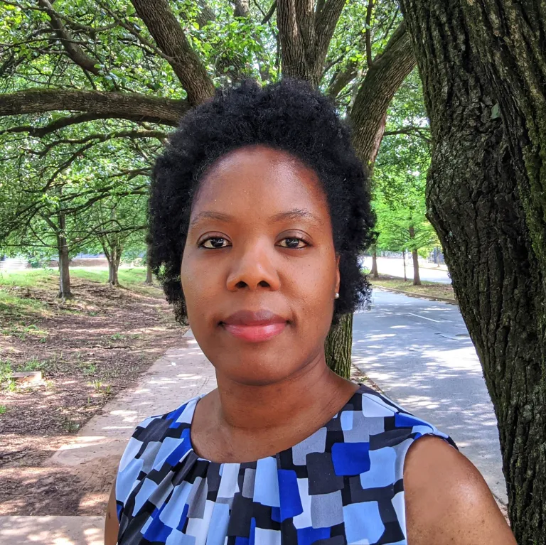
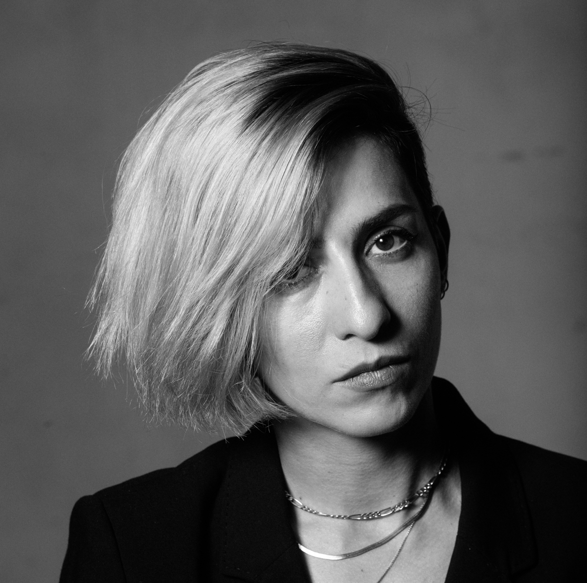
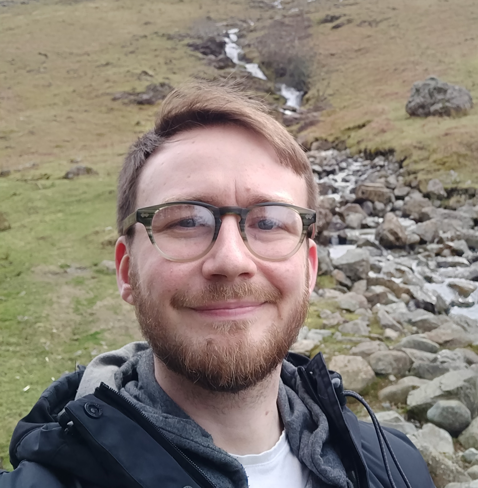

About
Toronto Geometry and Architecture (TGA) 2022 is the first in a series of collaborative workshop,
organized by Dynamic Graphics Project and the Daniels Faculty of Architecture, Landscape, and Design at University of Toronto, initiated by Professors Alec Jacobson, Maria Yablonina and Brady Peters.
This workshop is an opportunity for students from geometry processing and architectural computation research groups to communicate relevant issues in their fields.
It aims to fill the gap between geometric deep learning and architectural computation, and to promote collaborative research for social equity between these two fields.
Keynote Speakers

Vernelle Noel
Vernelle A. A. Noel, Ph.D. is a design scholar, architect, artist, and founding Director of the Situated Computation + Design Lab. Her research examines traditional and automated making cultures and practices, interdisciplinary creativity, and their intersections with society. She builds new expressions, tools, and methodologies to explore social, cultural, and political aspects of making, computational design, and emerging technology for new social and technical reconfigurations of design practice, pedagogy, and publics. Her work is thoroughly interdisciplinary with training in design computation; architecture; science, technology, and society (sts) studies; media arts, and sciences.

Behnaz Farahi
Behnaz Farahi is a designer, creative technologist and critical maker. Trained as an architect, she explores how to foster an empathetic relationship between the human body and the space around it through the implementation of emerging technologies. Her goal is to enhance the interaction between human beings and the built environment by following morphological, and behavioral principles inspired by natural systems. Her work addresses critical issues such as feminism, emotion, bodily perception and social interaction. She specializes in computational design, interactive technologies, additive manufacturing and digital fabrication technologies.

Jay Cockburn
Jay Cockburn is a freelance journalist and podcast producer interested in how we design our lives. He's interested in urban design, science fiction and political ideas, and anything that involves imagining and realising a better world. Jay worked at the BBC in London for eight years before he moved to Toronto in 2019, where he started work as a podcast producer. Most recently he's worked with documentary podcast 99% Invisible to produce and report a story about the missing middle in Toronto and the rest of North America. Currently Jay is working as the lead producer for Darts and Letters, a show about the politics of ideas, and as a senior producer at Vocal Fry Studios. You can also read his book, The Podcaster's Audio Guide.

Anne Benaroya
Anne Benaroya is a Master of Planning Student with an interest in how transportation and land-use planning can together affect social, environmental, and economic aspects of society. Having work experience evaluating provincial and federal government programs, She has seen how policies impact citizens’ lives. She is excited to study Planning so that she can help directly address complex issues. She is interested in the implementation of innovative approaches to improve the equity and sustainability of our cities and rural areas. She is currently working with Dr. Sweet on analyzing the impacts of the town of Innisfil’s unique partnership with Uber, which provides subsidized ride hailing as an alternative to traditional fixed-route buses.
Tentative Program
The events of TGA will be held distributed among various rooms in the Bahen Centre for Information
Technology and The Daniels Building.
This workshop will be composed of keynotes, technical tutorials by current students in both research groups, and group discussions and activities. All events are in-person only.
Small group discussions are open format. Each group is encouraged to start with introductions. Bring your laptop for activities.
| Friday, October 21st, 2022 |
| 10:00‑11:00 |
The Daniel BuildingKeynote #1: TBD |
| 11:15‑12:00 |
The Daniel BuildingTutorial TBD |
| 12:00‑13:00 |
Lunch Time |
| 14:00‑14:45 |
BA 5187Tutorial TBD |
| 15:00‑16:00 |
BA 5187Happy Hour |
| 16:00‑17:00 |
BA 5187Group Activities TBD |
Saturday, October 22nd, 2022 |
| 10:00‑11:00 |
BA 5187Keynote #2: TBD |
| 11:15‑12:00 |
BA 5187Tutorial TBD |
| 12:00‑13:00 |
Lunch Time |
| 14:00‑14:45 |
BA 5187Tutorial TBD |
| 15:00‑15:45 |
BA 5187Tutorial TBD |
| 16:00‑17:00 |
BA 5187Group Activities TBD |